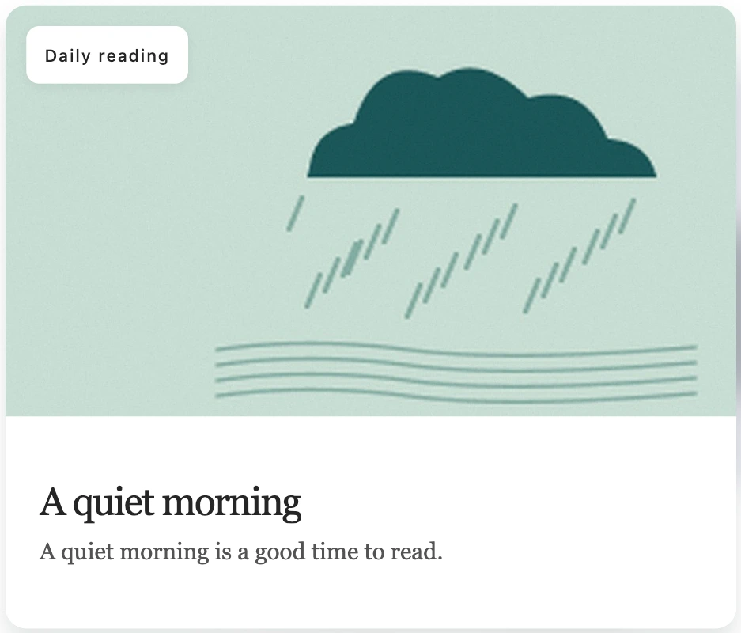
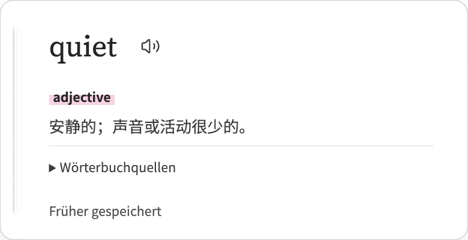

LexiCue / Englisch lesen
Ein Wort verstehen.Den Satz behalten.
Lies einen Text, der dich interessiert. Schlage ein Wort nach und speichere den Satz, in dem du ihm zum ersten Mal begegnet bist.
Lesetisch
Beginne mit deinem eigenen Lesestoff.
Importiere Bücher, Artikel oder Untertitel. Du kannst auch Text, einen Weblink oder einen YouTube-Link einfügen. Nach der Vorschau liegt das Material auf deinem Lesetisch.
Handbuch
Im Text nachschlagen
Hör dir das Wort direkt beim Lesen an.
Wähle quiet aus. Direkt neben dem Stichwort findest du die Aussprache. Lies die Bedeutungen und schau im Satz nach, welche hier passt.
Handbuch
Speichern und wiederfinden
Ein Ausdruck in zwei Geschichten.
Im ersten Text ziehen wir mit take off unsere Mäntel aus. Im nächsten hebt ein Flugzeug ab. Speichere Satz und Quelle. Wenn der Ausdruck beim Weiterlesen markiert ist, kannst du den früheren Beleg wieder öffnen.
Handbuch

Lies selbst eine Passage.
Öffne einen Beispieltext und wähle ein englisches Wort aus, um seine Bedeutung im Satz zu entdecken.
Öffentlich verfügbar ist v0.4.5 für macOS, Windows und Android. Online erprobst du die neuere Leseoberfläche; ein öffentlicher iPhone-Installer ist noch nicht verfügbar.